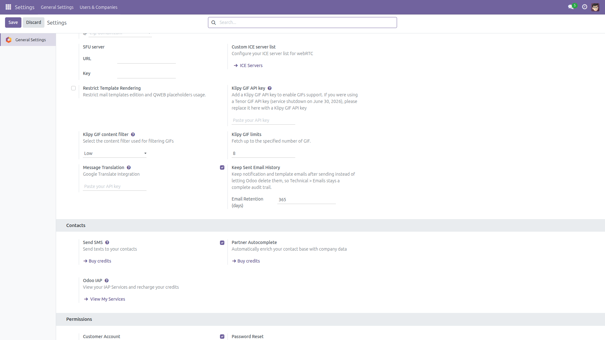
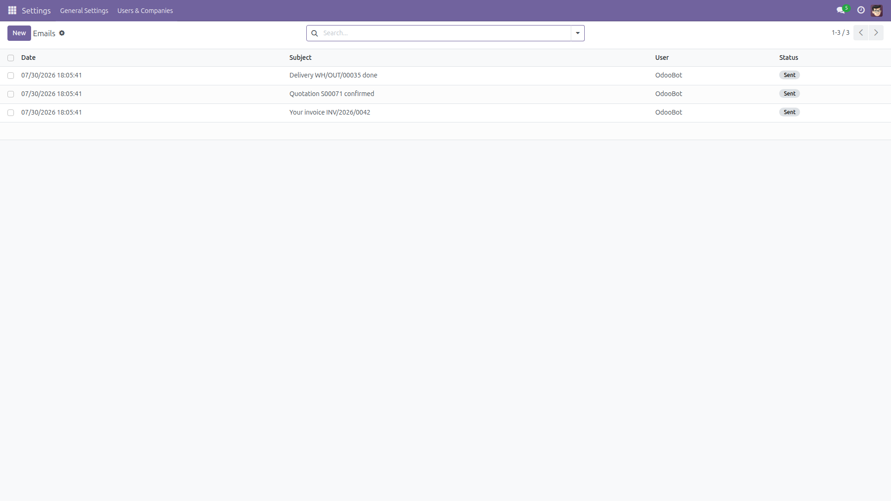
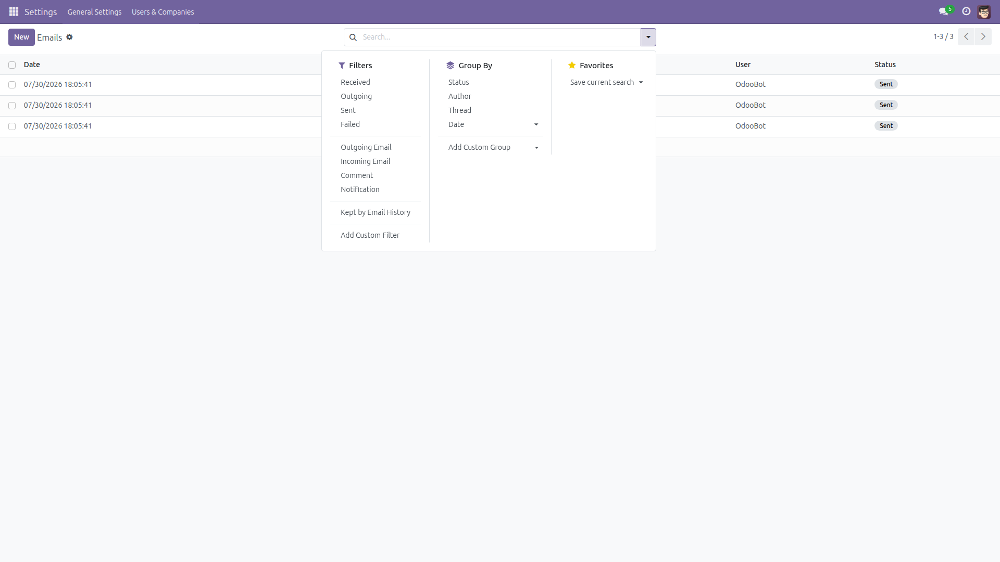

Keep Sent Email History
Every sent email, kept and auditable.
Odoo silently deletes most notification and template emails right after sending them —
Settings → Technical → Emails stays empty, and when a customer says
"I never received that", you have nothing to show. This module keeps every sent email with a
configurable retention period, turning the Emails screen into a real audit trail.
Free and open source (LGPL-3), identical behavior on Odoo 14.0 through 19.0.
- Works immediately — active on install with a sensible 365-day retention.
- Bounded database growth — a daily job purges kept emails (including failed/cancelled ones) past retention; set 0 to keep forever.
- Transparent — a "Kept by Email History" filter shows exactly which emails were preserved.
- Safe — emails already configured to be kept are never touched by the cleanup.
Screenshots

Settings → General Settings → Discuss: keeping is on out of the box, with a 365-day retention you can change (0 = keep forever).

Technical → Emails is no longer empty: notification and template emails stay listed after sending, with recipients, dates and status.

The "Kept by Email History" filter shows exactly which emails this module preserved.
Installation
- Open Apps, remove the default "Apps" filter if needed, and search for Keep Sent Email History.
- Click Install. Only the standard
mail module is required.
- Keeping is active immediately — no further setup needed for the defaults.
Configuration
- Go to Settings → General Settings, scroll to the Discuss section and find Keep Sent Email History.
- Set Email Retention (days) — kept emails older than this are deleted by a daily job. Use 0 to keep emails forever.
- Click Save.
Usage
- Enable developer mode, open Settings → Technical → Emails — sent chatter notifications and template emails now stay listed with their recipients, dates and contents.
- Apply the Kept by Email History filter to see what this module preserved.
- The daily scheduled action "Emails: purge kept history past retention" enforces your retention window automatically.
- Switching the feature off stops keeping new emails; already-kept emails remain until retention removes them.
- Password reset and signup invitation emails are never kept — they contain one-time login links, so Odoo deletes them as usual.
Version notes
Behavior is identical on every supported series (14.0 – 19.0). Only internal view markup differs per version.
License: LGPL-3 · Source on GitHub · Issues and contributions welcome.